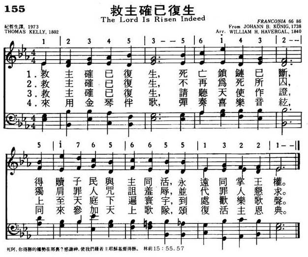
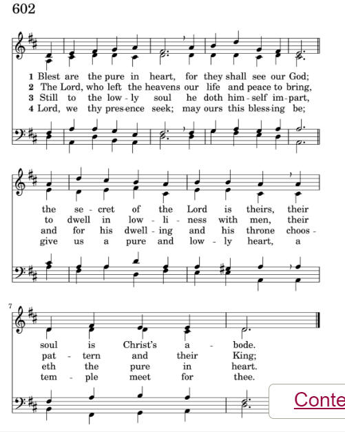
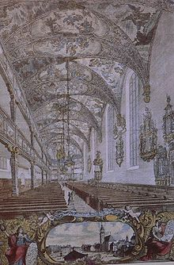

|
|
颂主新歌 |
|
1 The Lord is ris'n indeed; 2 The Lord is ris'n indeed: 3 The Lord is ris'n indeed: 4 The Lord is ris'n indeed: 5 Then take your golden lyres |
1.救主确已复生，死亡锁链已断，
|
|
https://www.mred365.cn/szxg/7158.html  |
|
|
|
|

The Advent of Our God (Franconia) https://youtu.be/6lT_IvAE-ts -
https://youtu.be/3A17ioz4k3g -
Easter Anthem "The Lord is ris'n indeed" · Paul Hillier · His Majestie's
Clerkes
https://youtu.be/YCqfw7McfpE -
基督已復活Christ is Risen Indeed! https://youtu.be/ZzGPUnDhzX4
| Text: | The Lord is risen indeed |
| Author: | Thomas Kelly, 1769-1855 |
| Short Name: | Thomas Kelly |
| Full Name: | Kelly, Thomas, 1769-1855 |
| Birth Year: | 1769 |
| Death Year: | 1855 |
Kelly, Thomas,

B.A., son of Thomas Kelly, a Judge of the Irish Court of Common Pleas, was born in Dublin, July 13, 1769, and educated at Trinity College, Dublin. He was designed for the Bar, and entered the Temple, London, with that intention; but having undergone a very marked spiritual change he took Holy Orders in 1792. His earnest evangelical preaching in Dublin led Archbishop Fowler to inhibit him and his companion preacher, Rowland Hill, from preaching in the city. For some time he preached in two unconsecrated buildings in Dublin, Plunket Street, and the Bethesda, and then, having seceded from the Established Church, he erected places of worship at Athy, Portarlington, Wexford, &c, in which he conducted divine worship and preached. He died May 14, 1854. Miller, in his Singers & Songs of the Church, 1869, p. 338 (from which some of the foregoing details are taken), says:
| Tune: | FRANCONIA |
| Adapter: | William H. Havergal, 1793-1870 |
| Composer: | Johann Balthasar König, 1691-1758 |
| Short Name: | Johann Balthasar König |
| Full Name: | König, Johann Balthasar, 1691-1758 |
| Birth Year: | 1691 |
| Death Year: | 1758 |
Johann Balthasar König; b. 1691, Waltershausen, near Gotha; d. 1758, Frankfort
Evangelical Lutheran Hymnal, 1908

總括而言，全曲節奏獨特，有輕鬆的主題旋律，也有其他聲部連結(legato)的呼應；有二部的互唱，更有四部的雄渾和聲，是一首不可多得的復活節歌曲。
基督已復活
Christ is Risen Indeed!
曲：Natalie Sleeth, 引用EASTER HYMN
編：陳供生
原詞：Natalie Sleeth, 引用EASTER HYMN
粵詞：劉永生
曲集：浩聲讚詠合唱曲集（二）－福音的大能
降臨為愛！全為愛！是耶穌！
偉大榮耀歸向主在天！
血流命喪成上帝羊羔，
基督經過三日復活！
降臨為愛！全為愛！是耶穌！(祂是真道，)
偉大榮耀歸向主在天！(榮與耀盡皆獻予祂！)
血流命喪成上帝羊羔，(啊，祂是真道，)
基督經過三日復活！(榮耀美麗全是基督！)
那日降為人，生於苦困，基督乃是救主！
(祂降世要救萬族萬邦！)
偉大愛來臨！驅散黑暗拯救萬邦，恩典滿溢！
(祂已作永世主到萬代！)
降臨為愛！全為愛！是耶穌！(祂是真道，)
偉大榮耀歸向主在天！(榮與耀盡皆獻予祂！)
血流命喪成上帝羊羔，(啊，祂是真道，)
基督經過三日復活！(榮耀美麗全是基督！)
大愛真神來救贖，阿利路亞！
無限恩典今賜下，阿利路亞！
降臨為愛！全為愛！是耶穌！(祂是真道，)
偉大榮耀歸向主在天！(榮與耀盡皆獻予祂！)
血流命喪成上帝羊羔，(啊，祂是真道，)
基督經過三日復活！(榮耀美麗全是基督！)
(耶穌全能王萬世。)
降臨為愛！全為愛！是耶穌！(基督永活！基督永活！)
偉大榮耀歸向主在天！(榮與耀盡皆獻予祂！)
血流命喪成上帝羊羔，(耶穌全能王萬世。)(基督永活！基督永活！)
基督經過三日復活！(榮耀美麗全是基督！)
痛，願意接受！死，決不驚怕！
祂已得勝利無敵！
願唱妙韻齊來稱讚祂得勝，歡慶愉快唱高歌！
(我心唱歌快樂！我願獻頌揚唱阿利路亞！)
(高歌齊獻唱讚美阿利路亞！)
(樂歌齊唱阿利路亞！)
降臨為愛！全為愛！是耶穌！（大愛真神！大愛真光！哈利路亞）
血流命喪成上帝羊羔！（大愛真神！大愛真光！哈利路亞）
大愛真神！榮耀真道！
大愛真神！基督永活！
榮耀美麗全屬基督！
Johann Balthasar König 1691– 1758 Wikipedia,
|
Johann Balthasar König
|
|
|---|---|
|
 |
|
| Born | |
| Baptised | 28 January 1691 |
| Died |
2 April 1758 (aged 67) |
| Occupation |
|
| Organization | Katharinenkirche, Frankfurt |
{kind=link}
Johann Balthasar König (baptised 28 January 1691 – buried 2 April 1758) was a German Baroque composer, especially of hymn melodies, having published a hymnal with 1,913 melodies. He was the church musician at Frankfurt's main Protestant church, the Katharinenkirche, and the town's Kapellmeister. He was also closely associated with Georg Philipp Telemann.
Career[edit]
Born in Waltershausen, König was a son of Johann Jakob König. He was in Frankfurt a chorister of the municipal gymnasium.[1] He joined the municipal chapel when Georg Philipp Telemann was its director.[2]
König married in 1717 Anna Maria Pfaff, the daughter of a tailor. Telemann became the godfather of their son Georg Philipp, born in 1718. König was appointed director of the chapel at the Katharinenkirche. He was promoted to municipal Kapellmeister (director of music) in 1727, succeeding Johann Christoph Bodinus (1690–1727).[3]
König composed several hymns, cantatas and operas. His most important work is the 1738 collection Harmonischer Liederschatz, with 1,913 melodies, of which 358 were not published before.[1] The full title reads:
Three of his hymns are part of the current Protestant hymnal Evangelisches Gesangbuch, "O daß ich tausend Zungen hätte" (EG 330), "Ich habe nun den Grund gefunden" to lyrics by Johann Andreas Rothe (EG 354), and "Ich will dich lieben, meine Stärke" (EG 400).[1] Martin Rößler, who analyzed the melody for Liederkunde zum Evangelischen Gesangbuch which supplies scholarly background information of songs in the EG, summarized that it follows the "emotional elements" of the text well by a focus on expansion at the beginning, and on concentration at the beginning of the abgesang, is well structured and offers some word painting.[4]
Literature[edit]
- Peter Cahn: Kirchenmusik an St. Katharinen. In: Joachim Proescholdt (ed.): St. Katharinen zu Frankfurt am Main. Verlag Waldemar Kramer, Frankfurt am Main, 1981.
- Christiana Jungius: Telemanns Frankfurter Kantatenzyklen. Bärenreiter, Kassel 2008, ISBN 978-3-7618-1998-2, pp 84–109.
- Susanne Schurr (1992). "König, Johann Balthasar". In Bautz, Traugott (ed.). Biographisch-Bibliographisches Kirchenlexikon (BBKL) (in German). Vol. 4. Herzberg: Bautz. cols. 279–281. ISBN 3-88309-038-7.
https://en.wikipedia.org/wiki/Johann_Balthasar_K%C3%B6nig